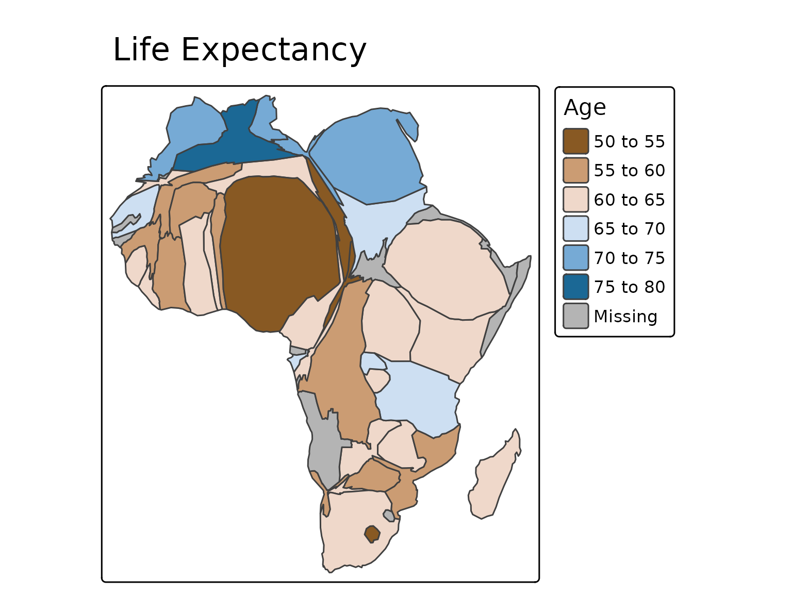
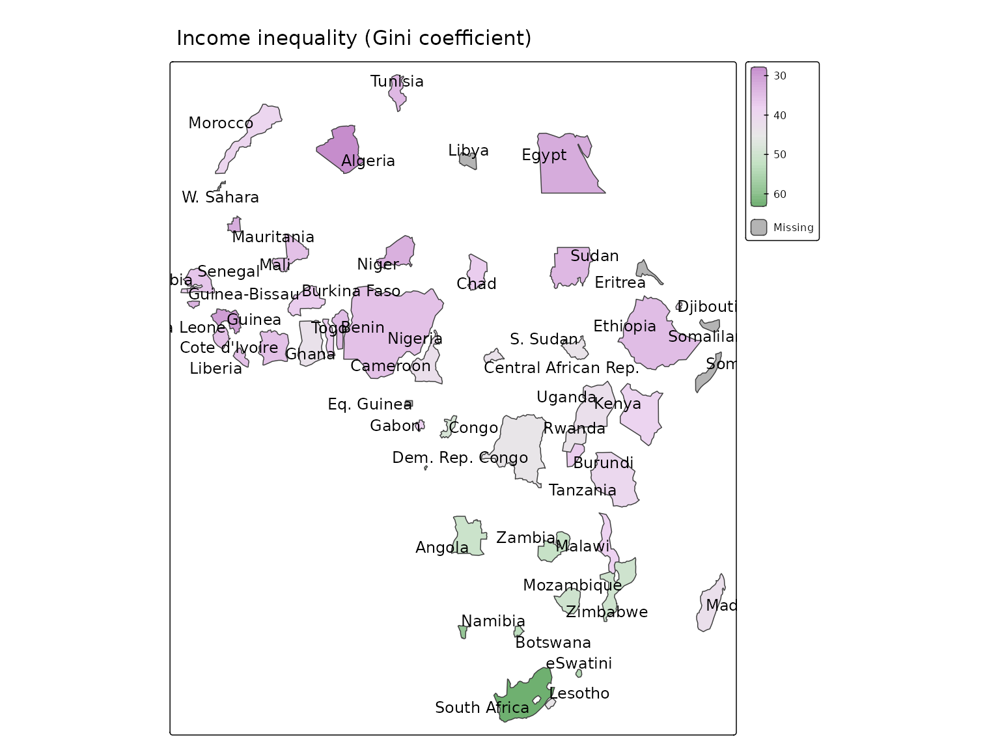
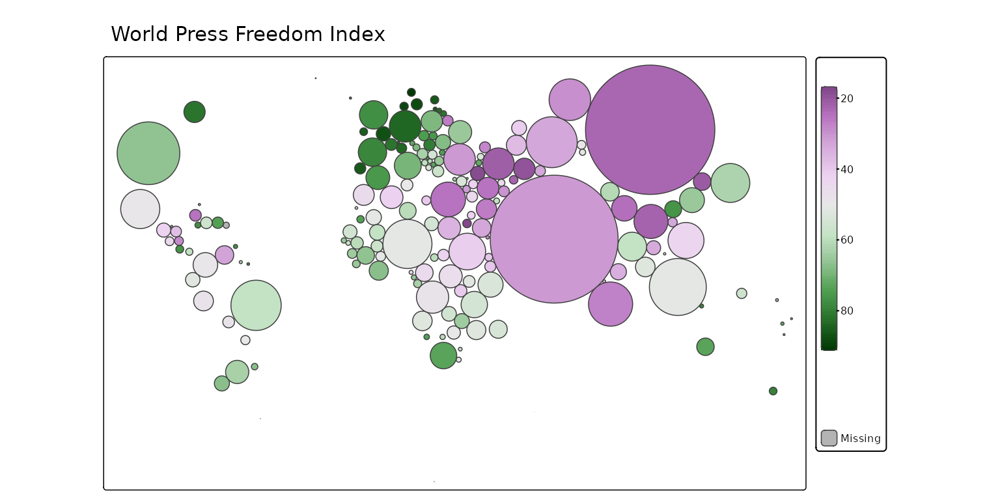

Cartograms
In cartograms, areal regions are distorted such that the obtained area sizes are proportional to a quantitative variable. There are three types: contiguous, non-contiguous and dorling cartogram.
It is strongly recommended to use an equal area crs (see instructions).
Contiguous cartogram
The shapes of the polygons are distorted, where the neighborhood relationships between them are preserved as much as possible.
Africa = World[World$continent == "Africa", ]
tm_shape(Africa, crs = "+proj=robin") +
tm_cartogram(size = "pop_est",
fill = "life_exp",
fill.scale = tm_scale_intervals(values = "-cols4all.bu_br_div"),
fill.legend = tm_legend("Age"),
options = opt_tm_cartogram(itermax = 15)) +
tm_title("Life Expectancy")
#> Cartogram in progress...
Non-contiguous cartograms
Here, the polygons are only resized while they keep their shape.
tm_shape(Africa, crs = "+proj=robin") +
tm_cartogram_ncont(size = "pop_est",
fill = "inequality",
fill.scale = tm_scale_continuous(values = "cols4all.pu_gn_div", values.range = c(0, 0.5)),
fill.legend = tm_legend(""),
options = opt_tm_cartogram_ncont()) +
tm_text("name", options = opt_tm_text(point.label = TRUE)) +
tm_title("Income inequality (Gini coefficient)")
#> Cartogram in progress...
Dorling cartogram
Polygons are replaced by non-overlapping bubbles.
tm_shape(World, crs = "+proj=robin") +
tm_cartogram_dorling(size = "pop_est",
fill = "press",
fill.scale = tm_scale_continuous(values = "cols4all.pu_gn_div", midpoint = 50),
fill.legend = tm_legend("", height = 30)) +
tm_title("World Press Freedom Index")
#> Cartogram in progress...